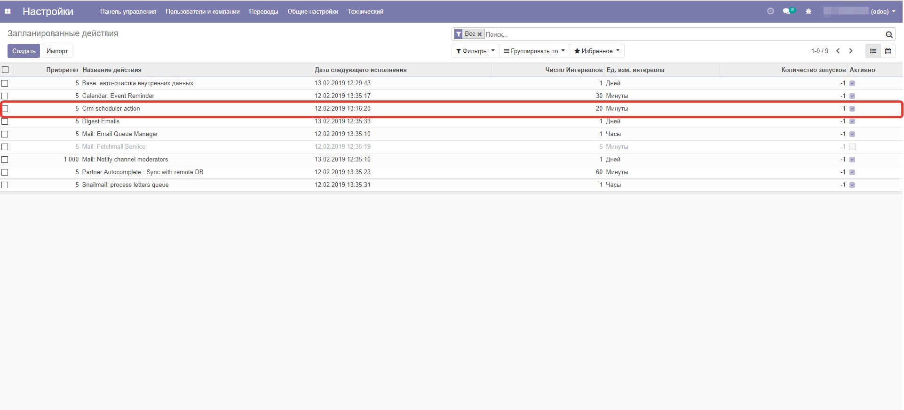
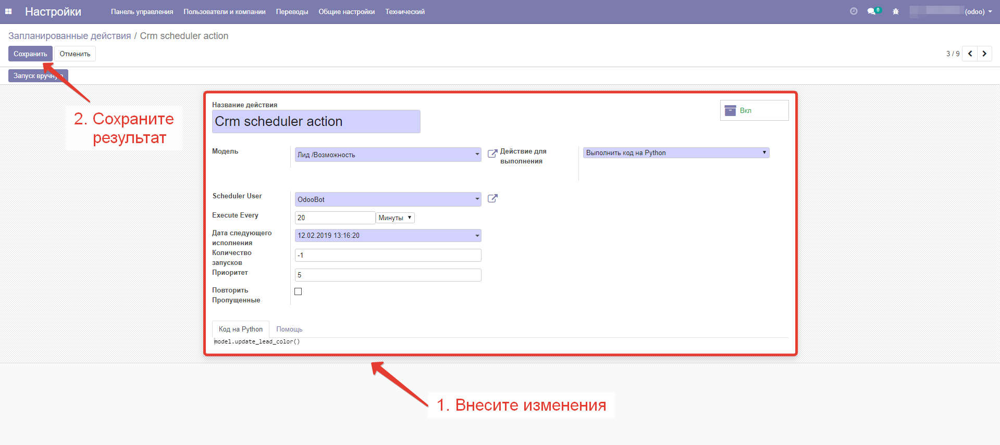

Настройка инструмента
Внесение правок в режим проверки
1a. Активируйте режим разработчика
1b. Откройте "Настройки > Автоматизация > Запланированные действия"
1с. Выберите "Crm scheduler action"
1d. Нажмите "Редактировать", внесите изменения, сохраните их


Подходит для корпоративных и общественных версий odoo